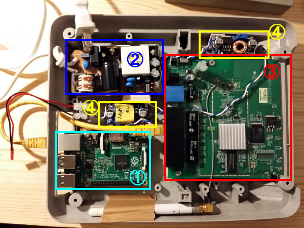
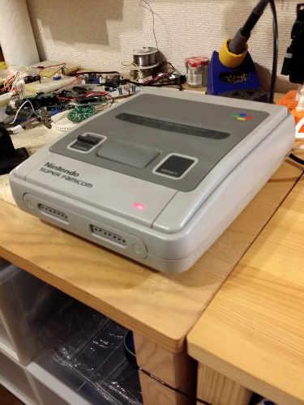
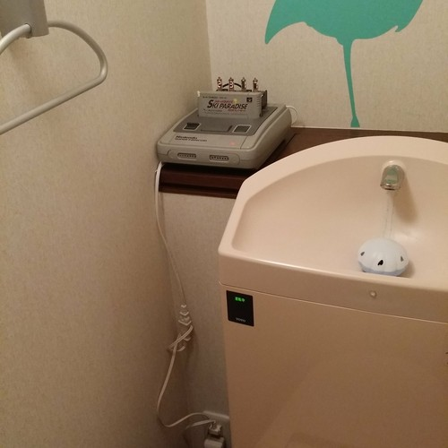

Purpose
Need a web server for self hosting, use a Raspberry Pi 2 of course (seeing I expect 200-300 page views a day we're safe). I need a DMZ in my internal network so the old router sleeping in the closet found a new life. I also had those beefy AC/DC modules in my lucky bag in Akihabara years ago, make the 110v a steady 10.5V with a decent amount of amps (measured 4 when short cutting I think). Throw in a couple of step down "buck" converters (no 7805) from eBay to have a decent efficiency and get my 5v for the Raspi as 3.3v for the router. Interresting fact this SoB of router does not work with 3.3v but is fed about 3.5-3.6v otherwise it doesn't start or keep rebooting. Not the fault of the power module, I tested with my beefy DC supply and with a precise 3.3v it keep on rebooting. The original power plug was measured 3.47V (though labelled 3.3v), so, what the hell, it works, maybe not for a century but I'll manage.
The whole thing is stuffed inside a SNES body that was the empty shell of my
Arcade cabinet made with a SNES. I had to make fake joypad port, just wood with a few holes and painted/varnished the same as the SNES original grey, ... if you don't pay attention it makes acceptable illusion.

|
1- Raspberry Pi2
2- AC/DC converter (110V AV -> 10.5V DC)
3- Old router
4- Step down buck converters
|
|  |
Nearly final product. Looks not bad huh? |
|  |
Final product: there's a small fan in the cartridge to help with air convection (the router gets quite hot). This website you read now is hosted from my toilets :) |
Software
Now comes the fun. My goals are to:
- Serve static content: html, css, images... I don't care/desire php modules or else, I'm fine editing my site with emacs (yes, I do)
- A little dynamic though: if I could do some page combination on the fly like ASP.Net master page or maybe have a few tags dynamcally parsed, that would be cool but I could live without it.
Option 1 use a home made Python webserver
✗Which is what I did first, it handled bravely a few attacks until some a**hole found a breach and killed it with a few commands. Yeah, BaseHTTPServer is not the most robust implementation.
Option 2 a existing Python framework
Flask is the answer. and that's the way to go!
Option 3 a fullfledge web server
Not Apache (robust but cabalistic config), but maybe an easier/lighter Nginx?